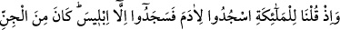
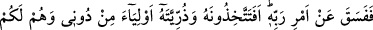
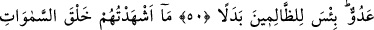
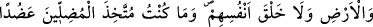
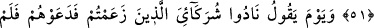
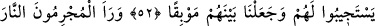
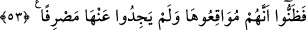

İBLİS CİNLERDENDİ
RABBİNİN EMRİNDEN
DIŞARI ÇIKTI
50. Hani biz meleklere: Âdem’e secde edin, demiştik; onlar hemen secde ettiler.
Yalnız İblis secde etmedi. O cinlerdendi; Rabbinin emrinden dışarı çıktı. Şimdi siz,
beni bırakıp da onu ve onun soyunu mu dost ediniyorsunuz? Oysa onlar sizin
düşmanınızdır. Zalimler için bu ne fenâ bir değişmedir!
51. Ben onları (İblis ve soyunu) ne göklerin ve yerin yaratılışına, ne de bizzat
kendilerinin yaratılışına şâhid tuttum. Ben yoldan çıkaranları yardımcı edinecek
değilim.
52. Yine o günü (düşünün ki, Allah, kâfirlere): Benim ortaklarım olduklarını ileri
sürdüğünüz şeyleri çağırın! buyurur. Çağırmışlardır onları; fakat kendilerine cevap
vermemişlerdir. Biz onların arasına tehlikeli bir uçurum koyduk.
53. Suçlular ateşi görür görmez, orayı boylayacaklarını iyice anladılar; ondan
kurtuluş yolu da bulamadılar.
“Hani Biz meleklere:” onlara şöyle dediğimiz vakti zikret: “Âdem’e secde edin”
ibâdet secdesinde değil, selamlama ve saygı secdesinde bulunun “demiştik” Selamlama
ve saygı secdesi geçmiş ümmetlerde meşrû idi, selam ile nesh edildi.
Bu emre imtisâlen yüce ruhların dışında “onlar hemen secde ettiler.” Ancak büyük
melekler ona secde etmediler. Çünkü onlar, Âdem (a.s.)’a secde etmekle
emrolunmamışlardı. Bu konunun açıklaması Hicr sûresinde geçmişti.
“Yalnız iblis secde etmedi” bundan kaçındı ve büyüklendi. Sanki “Ona ne oldu da
secde etmedi?” diye sorulmuş ve cevâben şöyle buyrulmuştur: “O cinlerdendi.” Onun
aslı nüfuz eden kavurucu ateşten yaratılmış bir cindi. O, Meleklerden değildi. Burada
şeytanın meleklere olan emirden kaçınmasının, sanki onlardan biriymiş gibi istisnâ